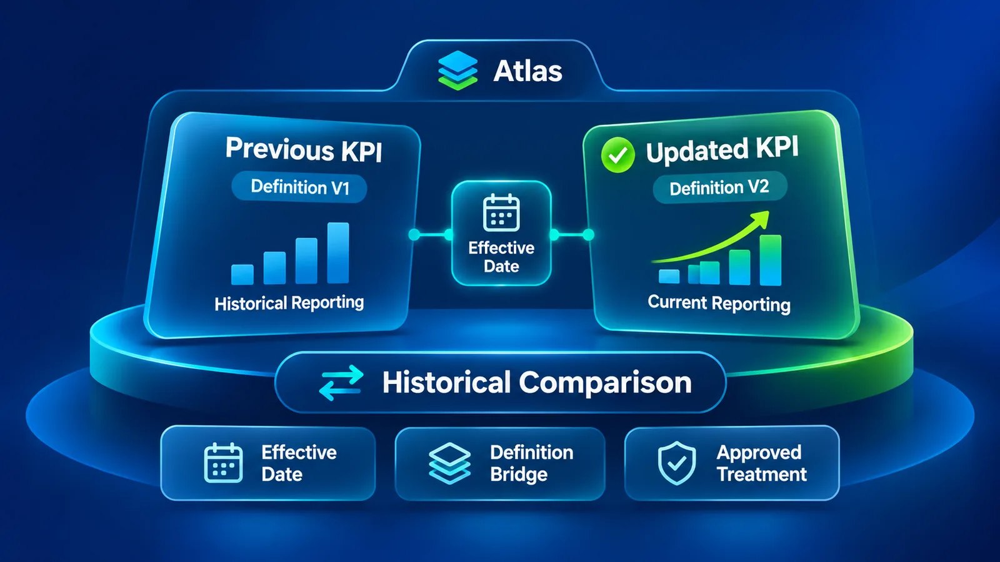

A new KPI can turn an enterprise priority into something managers can monitor and act on. For the CIO, a successful rollout connects the approved business definition with every relevant reporting channel, review process and AI-assisted experience. The leadership task is to make the change usable across teams while preserving clear business ownership.
Consider a service organization introducing an on-time completion measure. The business needs to agree what completion means and how rescheduled work is treated. Technology teams need an effective date, a tested calculation and a plan for dependent reports. Managers need to understand how the new indicator changes their decisions.
This guide explains how the CIO can sponsor that rollout without becoming the owner of the underlying business policy. It provides a launch record, practical tests and an adoption plan. Finance, operations and BI leaders carry out the detailed work within the enterprise requirements the CIO establishes.
The enterprise release decision the CIO owns
Agree the technology release scope with the business sponsor. Identify the systems and consumption channels that must reflect the new indicator, then appoint a delivery owner to coordinate them. The business owner approves meaning and intended use. The CIO ensures that the release has an accountable technical plan and adequate support.
Make readiness visible before the launch date. Ask for test evidence, the historical comparison approach, the affected workflows and the communication plan. Where a channel cannot change at the same time, require a clearly labeled transition arrangement. This gives teams a coherent release rather than a collection of independent dashboard edits.
Begin with the management choice
Ask what decision the KPI will improve. An on-time completion measure might inform staffing, process improvement or a customer service review. Different purposes can require different definitions and reporting frequencies.
Identify the decision owner and the people affected by the measure. Include managers who will use it, analysts who maintain it and the operations staff whose work determines the result. Early participation can reveal practical conditions that a calculation workshop misses.
APQC’s guidance on developing KPIs discusses alignment with organizational objectives. The rollout should preserve that purpose throughout implementation so the chosen metric remains connected to a useful management decision.
Write the definition with examples
Document the calculation, population, time period and relevant exclusions. Explain the terms in language the intended users understand. Where a term has a specific operational meaning, link it with the relevant policy or source definition.
Use examples to test interpretation. For an on-time measure, consider an order completed on the requested date, an order rescheduled by the customer and a partially completed order. Ask the relevant owner how each should be classified.
Capture unresolved questions in a decision list with named owners. The team can continue preparing reports while a question is investigated, but it should not present the definition as approved until the responsible business authority settles the material conditions.
Establish ownership for the full lifecycle
Assign a business owner who approves meaning and intended use. Assign a technical owner who maintains the calculation and reporting path. Name the people who can propose a change and the person who approves its release.
The roles should remain clear after the launch team disbands. If a business process changes, the KPI may need review even when the data pipeline still operates correctly. Set a review trigger for changes to products, systems or organizational scope.
ZenOptics Atlas supports ownership and certification of analytics assets. Those capabilities can help make the responsible people and reviewed status visible, provided the enterprise defines and maintains the governance process.
Map every place the KPI will appear
List the dashboards, reports, extracts and business reviews that will use the indicator. Include scheduled emails, embedded content and manually maintained briefing packs. A new definition can reach users through more channels than the primary dashboard.
Record which assets will change at launch and which will remain temporarily on the previous definition. Explain how users will distinguish them. A phased rollout can be appropriate when its boundaries are visible and its owners agree.
Include AI-assisted tools in the dependency review. If an assistant can retrieve a description of the old KPI, update the applicable context and test the questions users are likely to ask. The launch reaches beyond a single formula or dashboard label.
Validate the calculation through business cases
Prepare a test set containing ordinary records and the edge cases identified during definition. Compare the results with independently reviewed expectations. Test the relevant time boundaries, classifications and changes in scope.
Ask business users to interpret the result in a realistic scenario. A calculation can pass a technical test while the displayed label encourages a different interpretation. Review the title, units, denominator and comparison notes together.
Preserve the test evidence and approvals. W3C’s provenance overview provides background for connecting information with the activities and people involved in producing it. The rollout team should be able to explain which version passed which review.
Decide how historical comparisons will work

Choose whether historical periods will be recalculated under the new definition, shown under the old definition or presented with a bridge. The answer depends on available data, reporting purpose and the business owner’s requirements.
Make the choice visible wherever users compare performance. A new measure might show a different trend because the definition changed, rather than because operations changed. Avoid placing the series side by side without an explanation.
AFP’s variance analysis guidance provides context for interpreting comparisons. For the KPI launch, the team’s responsibility is to establish that the periods represent a meaningful basis for the question being asked.
Keep a launch record that users can find
The following record can accompany the KPI in the analytics catalog and the launch communication. It makes the most important release choices visible.
Include a link to the detailed definition and the approved source. Keep the record concise enough for ordinary users to consult without needing to read the project’s entire implementation history.
Introduce the KPI through the operating process
Explain the measure in the business review where it will be used. Show one ordinary example and one boundary case. Ask managers to describe what a change in the KPI would mean for their next decision.
Provide a short guide to the actions the measure can inform. An indicator may justify investigation rather than an immediate intervention. State those limits so users can apply judgment appropriately.
APQC’s overview of KPIs provides general performance management background. The launch communication should go further by showing the organization’s own definition and decision context. A generic training presentation cannot substitute for those details.
Update the business context available to AI
Identify the approved name, common aliases and the definition that applies from the effective date. Explain how the new KPI relates to a predecessor or a similarly named measure. Retain a clear reference to earlier versions where historical questions require it.
ZenOptics Nexus organizes business context from governed analytics metadata. In a KPI rollout, that context can help an assistant identify the appropriate measure and its relationships. Confirm the actual curation and retrieval behavior in the deployment.
Test questions before release. Ask for the current definition, a historical comparison and a case that spans the effective date. The assistant should explain the relevant change or request clarification rather than silently join incompatible periods.
Coordinate the release with dependent workflows
If the KPI triggers a review or approval, confirm whether the threshold and escalation rules need to change. A revised denominator can alter the distribution of results even when the name remains the same.
ZenOptics Maestro supports structured analytical workflows. The process owner should review dependent steps and approvals as part of the KPI release, rather than assuming the workflow remains appropriate after the calculation changes.
NIST’s AI Risk Management Framework is a reference for evaluating the assisted portions of that process. The rollout tests should reflect the specific way the organization uses the KPI and the consequences of an incorrect interpretation.
Review adoption after the first cycles
Collect questions from users and record the cases that required clarification. Check whether managers use the approved source and understand the comparison basis. Review any alternative spreadsheet versions that appear, because they may reveal an unmet need.
Assess whether the KPI supports the decision it was introduced to improve. If users consistently need another measure alongside it, document the relationship rather than treating the supporting measure as competition. The indicator belongs in a decision context with other relevant evidence.
Keep the existing article on analytics governance across the BI estate as supporting reading. It explains the broader governance foundation. This launch plan focuses on the practical release and adoption of one new indicator.
Prepare the next change while the launch is fresh
Ask how the new KPI might influence behavior. If managers are assessed against the indicator, consider whether they could improve the score while weakening another important outcome. An on-time measure, for example, may need to be read alongside completion quality or an explanation of customer-requested changes. The purpose is to make the management interpretation explicit, rather than adding more measures automatically. Ask the operating owner to review a scenario where the KPI improves but the broader service outcome does not. Use that discussion to clarify the decision guidance before linking the indicator to performance targets or incentives.
For a practical discussion, bring one proposed KPI, the decisions it will inform and the reports that need to change. Contact ZenOptics to explore how analytics ownership, business context and workflow coordination could support the rollout.
The CIO action agenda
Before release, ask the business sponsor and delivery owner to confirm that the approved definition, dependent channels and user communication are ready. After launch, review actual questions and unresolved comparisons. Keep a named owner for subsequent changes and make the active version easy to identify. This turns a KPI introduction into an enterprise release the organization can sustain.
Frequently asked questions
Who should approve a new KPI?
A business owner with authority over its meaning and intended use should approve it, supported by technical validation and relevant process owners.
Should historical data be recalculated?
The choice depends on purpose, available evidence and business requirements. Whatever approach is selected should be explicit in the comparison.
What should users receive at launch?
Provide the purpose, approved definition, effective date, historical treatment, source location and contact for questions, with practical examples.
How does a KPI change affect AI assistants?
Update the applicable definitions and aliases, then test current and historical questions. The assistant needs a reliable way to identify which version applies.
References
1. APQC How to Develop KPIs — objective alignment.
2. APQC What Are KPIs — performance management background.
3. AFP Variance Analysis — comparison context.
4. W3C PROV Overview — evidence and version relationships.
5. NIST AI Risk Management Framework — assisted workflow risk reference.